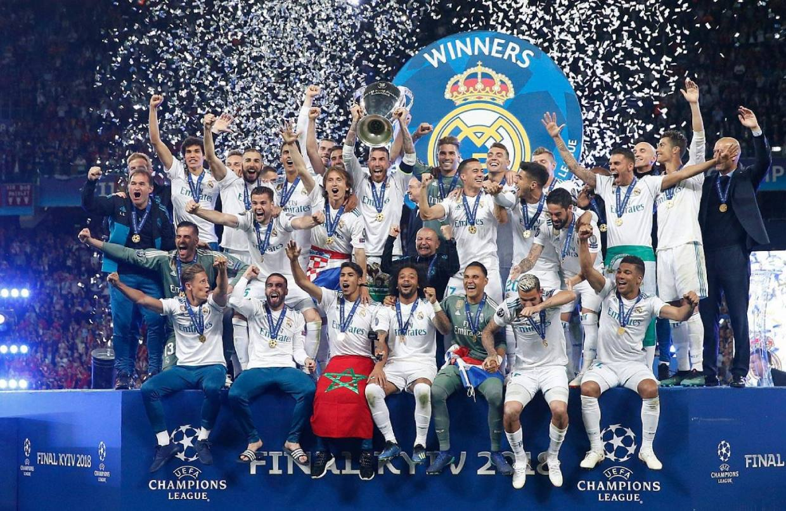
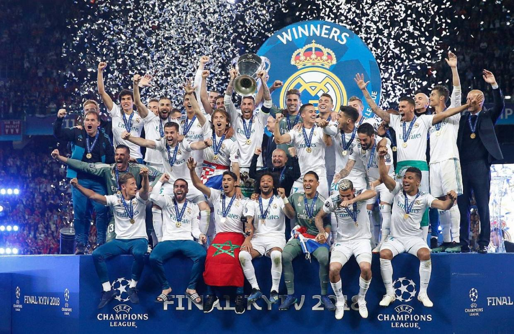

O Real Madrid é um dos clubes de futebol mais renomados e bem-sucedidos do mundo, com uma história rica e uma base de fãs globalmente diversificada. Fundado em 1902, na cidade de Madrid, Espanha, o Real Madrid rapidamente se tornou um ícone do esporte, acumulando inúmeros títulos nacionais e internacionais ao longo dos anos.
O clube é conhecido por sua identidade distintiva e seu famoso uniforme branco, que lhe rendeu o apelido de "Los Blancos". Sua sede, o icônico Estádio Santiago Bernabéu, é um marco da cidade de Madrid e um local reverenciado por fãs de futebol em todo o mundo.
Ao longo de sua história, o Real Madrid atraiu alguns dos maiores talentos do futebol mundial, com jogadores lendários como Alfredo Di Stéfano, Ferenc Puskás, Raúl González e Cristiano Ronaldo vestindo a camisa do clube. Esses grandes nomes ajudaram a forjar a reputação do Real Madrid como uma potência global no esporte.
 
